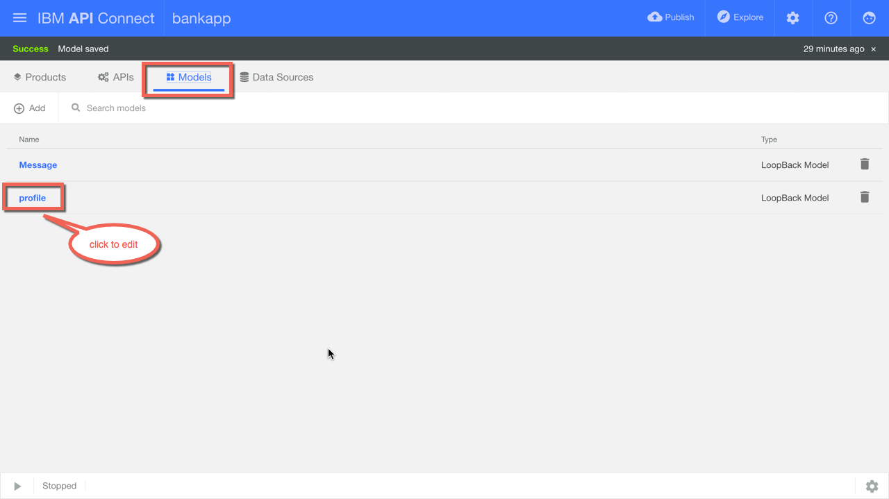

Table of Contents
1 Docker Tutorial
1.1 Summary
This tutorial is created using Emacs 24 with Org-Mode using features
- code block for
- mongodb
- shell
My environment
- Mac
- Git
- Emacs
- npm
- nodeJS
- brew
In this tutorial, you will
- learn how to pull image, build image, run it and manage it
- learn how to use IBM API Connect to rapidly create API that connect to a running instance of Docker mongodb instance
learn how to run a IBM WebSphere Liberty Docker image from IBM where you can quickly build app quickly that can run anywhere on premise or on the cloud.
Using this as an opportunity to explore Emacs Org Mode on Reproducible Research, usually I wrote such tutorial using MS Word but ever since I chance upon the topic of Reproducible Research I do noticed the advanctage of codes block where I can re-execute the codes again in a reproducible way.
I also like the idea of a text format which is portable across multi platform and I sharing it in GitHub. ;-)
Feel free to provide feedback and expand it for your own use.
Would love to hear, what you have done with it too.
1.2 Notes
- to execute the code with the code block, place cursor with block and place C-c C-c
- command with are iteractive will not work e.g. apic loopback
1.3 What is Docker?
It allows you to Build, Ship and Run a server everywhere. more details: What is Docker?
1.4 Install
more details: Get Docker
1.5 Demo 1 - Run a Ubuntu
- Pull an image Ubuntu
- Run Ubuntu image (running image is known as container) and login bash command
1.5.1 Pull an image from docker hub
docker pull ubuntu
1.5.2 Run Ubuntu in /bin/bash
docker run -i -t ubuntu /bin/bash
1.5.3 List all running instances aka containers
docker ps
1.5.4 List Images
docker images
1.5.5 List all instances aka containers
docker ps -a
1.6 Demo 2 - Run a Mongodb
1.6.1 Build Mongodb image
- Create a folder of your choice: mongodb
- Change to folder mongo and create a file: Dockerfile
- Execute the command below
Run the following from the folder where the Dockerfile is located
cd /Users/jaricsng/proj-dev/container/mongodb/
docker build -t mongodb .
1.6.2 Run the image
docker run -p 28001:27017 --name mongo_instance_001 -d mongodb
When the image is started successfully you will see the instance ID similar to the one shown below.
d3e36757a7de5c201e447f0f0ad0963dbea1939b7c4c0243f4a74c0169ad9f28
NOTE If encountered the error message below, use the following command to check instance already exist but stopped.
docker ps -a
docker: Error response from daemon: Conflict. The name "/mongoinstance001" is already in use by container 07afa4ca0096a5594bd0cec5d7b9ed67eb8c05252a8abe4c3b09be3edb71c058. You have to remove (or rename) that container to be able to reuse that name.. See 'docker run –help'.
- Solution:
You can either start the instance or you can choose to remove the instance and then run the image again
- Start the instance, run the following command
docker start mongo_instance_001
2a) Delete existing instance using the container <id> : d3e36757a7de shown above
docker rm d3e36757a7de
2b) With the instance removed you can re- 1.6.2 again.
1.6.3 Test MongoDB command
To connect to mongodb instance in terminal you can run the following command
mongo localhost:28001
You can then work with mongodb with command lines (CLI).
show dbs
show databases
show users
show collections
db.profile.find()
db.profile.drop()
1.7 Demo 3 - create an APIConnect app that connect to the mongodb instance
In this demo, we will create a demo with IBM API Connect, an app that we can quickly create an API and connect to mongodb.
1.7.1 Pre requisite
- Download and install IBM API Connect
1.7.2 Create API app with IBM API Connect
- Create a bankapp
In this step, we will create a loopback project more details: Creating a LoopBack project
- create a new folder ./app
- change folder to ./app
- type the command below
cd ./app apic loopback - Install mongodb connector
In this step, we will need to install the mongodb connector since we are connecting to docker mongodb instance more details: Installing LoopBack connectors
cd ./app/bankapp npm install --save loopback-connector-mongodbthe –save option will create a entry in the package.json file
trace for npm install –save loopback-connector-mongodb command
- Start mongodb instance
see 1.6.2
- Create a datasource
In this step, we will create the data source to mongodb More details: Creating a model and a data source from the command line
apic create --type datasource
- Create Model
In this step, we will create a model profile having one property name:string
cd ./app/bankapp apic create --type model - Test the loopback project
In this step, you will test the loopback project, you can do this via command line or API designer more details: Testing a LoopBack project sign up for a Bluemix account, where you can deploy your API on the cloud.
Note: Ensure the docker mongodb is running
You will use edit API with the UI designer where you
- Start the designer
- Edit property in model, map the model to the datasource
- Test the datasource connection
- Run the project
- Test Post (insert profile record)
- Test Get (find all profile record)
- Start with the following command for UI designer
apic edit
Figure 1: Overview of APIC designer
- Edit property in model

Figure 2: Access the model
Figure 3: Edit model view
- Test the datasource connection
Figure 4: Access datasource view
Figure 5: Configure and test datasource
Figure 6: Datasource test result
- Run the project
Figure 7: Start app
- Test Post (insert profile record)
Figure 8: Access POST API

Figure 9: Call POST API
Figure 10: Status of POST API
- Test Get (find all profile record)
Figure 11: Access GET API
Figure 12: Status of GET API call operation
- A sample NodeJS app that test the bankapp above
A simple clientapp to test call the newly created API profile
cd ./app/clientapp node .(browse-url "http://localhost:3000/api/profiles")
Alternatively, you can test the project via command line, see link above.
1.8 Demo 4 - Run a IBM WebSphere Liberty Server
In this demo you will pull a WebSphere Liberty image with sample app from Docker Hub and run it
1.8.1 Pull WebSphere Liberty profile
In a terminal, run the following command, it will pull a new Liberty image with webProfile7
docker pull websphere-liberty:webProfile7
1.8.2 Run the image
change the path in the command below accordingly to where the libertyapp folder is located on your machine.
The command basically runs a docker image with options
- d
- daemon
- p
- define a host port 80 map to docker container port 9080
- v
- mount a host folder ../libertyapp/DefaultServletEngine/where an application is located to the container /config folder
- websphere-liberty:webProfile7
- the name of the image to run
docker run -d -p 80:9080 -v /Users/jaricsng/proj-dev/container/demo-docker/app/libertyapp/DefaultServletEngine:/config websphere-liberty:webProfile7
1.8.3 Test the app
(browse-url "http://localhost/Sample1/SimpleServlet")
1.9 Resources
1.9.1 Docker Commands
| command | Description |
|---|---|
| docker ps | # List running instances |
| docker ps -a | # List all instances |
| docker inspect <id> | # Instance details |
| docker top <id> | # Instance processes |
| docker logs <id> | # Instance console log |
| docker run -i -t ubuntu /bin/bash | # New instance from image |
| docker start <id> | |
| docker restart <id> | |
| docker stop <id> | |
| docker attach <id> | |
| docker rm <id> | |
| docker cp '<id>':/data/file . | # Copy file out of container |
| docker images | # List locally stored images |
| docker logs <id> | # view the logs |
| docker kill <id> | # kill the instance |
| docker build -t <name> . | # build using the Dockerfile |
| docker run -p 5000:3000 -d -t <id> | # run in daemon with host port 5000 map to container port 3000 |
| docker stop $(docker ps -a -q) | # stop all instances |
| docker rm $(docker ps -a -q) | # remove all instances (caution!) |
| docker rmi $(docker images -q) | # remover all images (caution!) |
- Prelude prepackage by Bozhidar to make Emacs pleasant and powerful to use, would recommend starting with it
- The Emacs compact Org-mode Guide
- Short video of why Emacs rocks!
- Emacs + org-mode + python in reproducible research; SciPy 2013 Presentation
- Taking Notes In Emacs Org-Mode
- Emacs configuration of Magnars who produces the Emacs Rocks! videos.